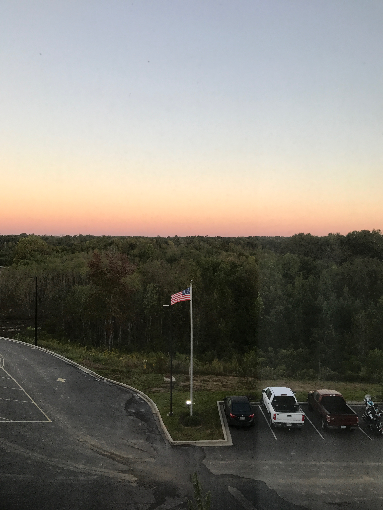
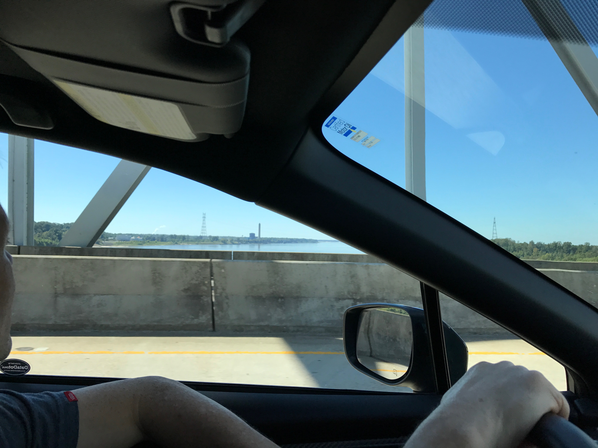
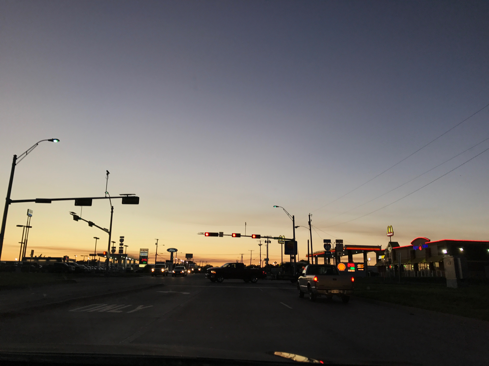
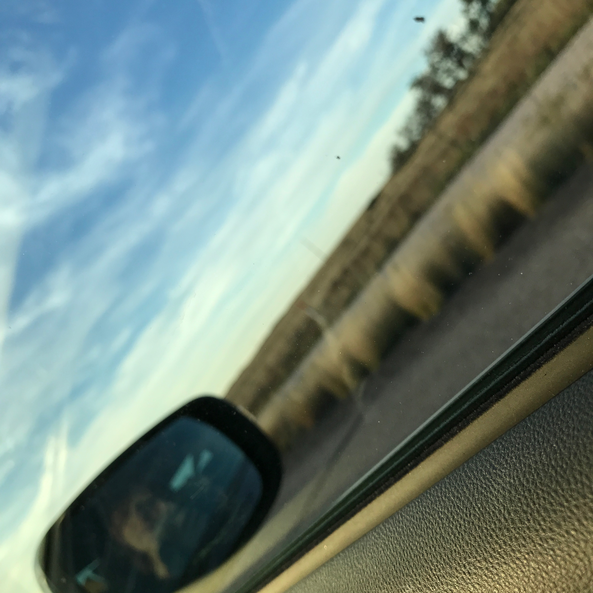
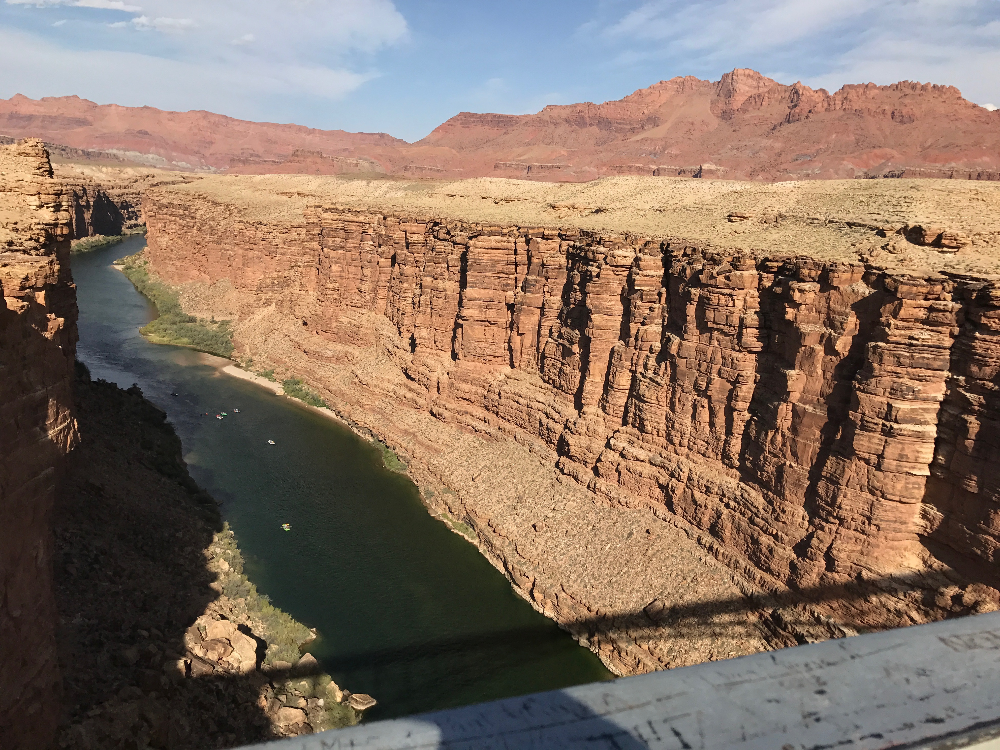
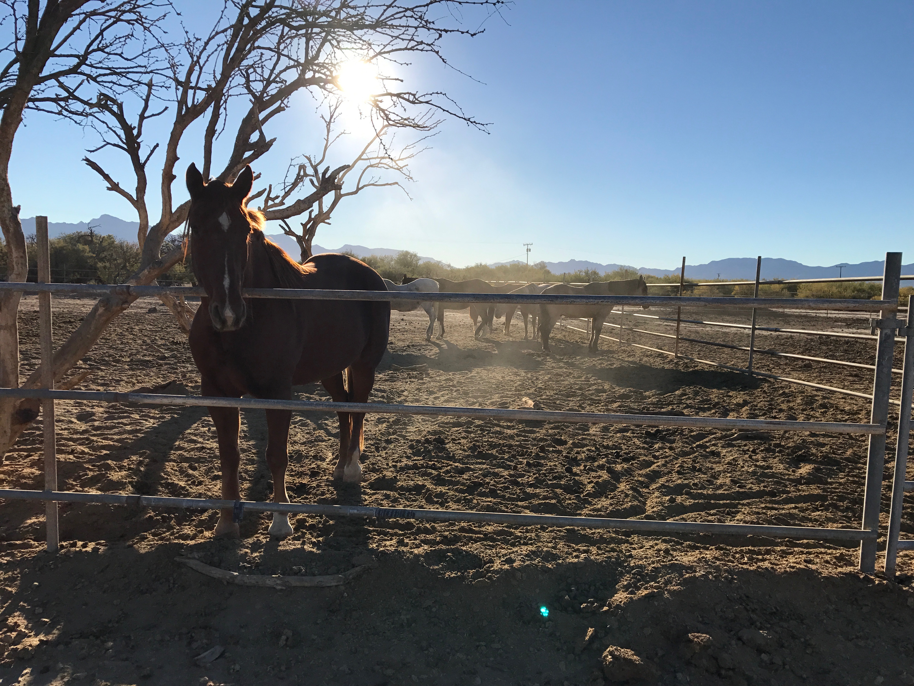
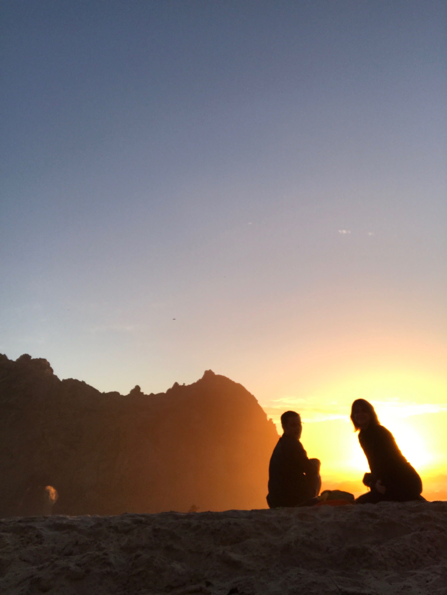
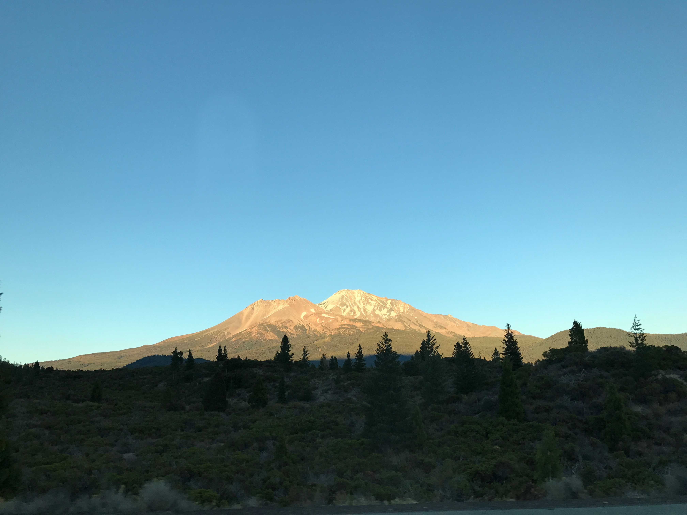

These are photos of the changing landscape as I traveled from Atlanta to Seattle.

Meridian, Mississippi. First Night. Early morning sunrise.

Across the Mississippi River Changing Times

Arriving in a Small Town in Texas at Sunset Second Night

Gazing Out the Window

On the Navajo Bridge over the Columbia River
Ranch Horses in the Early Morning Middle Night
Watching the Sun Set at Big Sur
Driving Past Mt. Shasta in the Evening Last Night